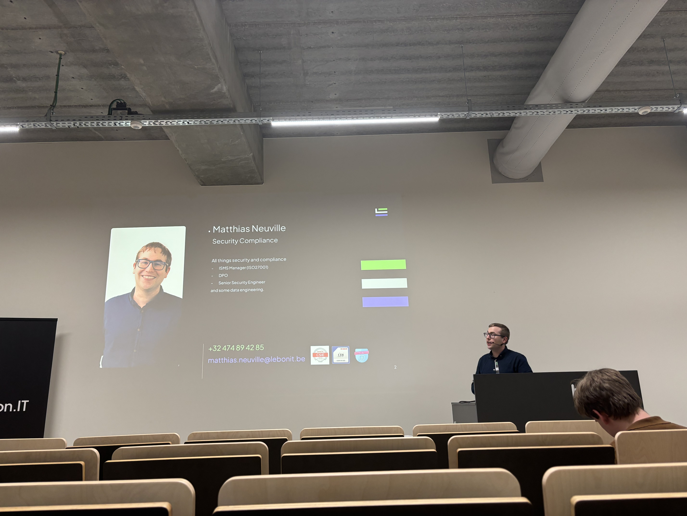

CyberSecurity Challenge Belgium 2025 - My Participation üë©ü誂Äçüíª
Table of Contents
Introduction
Today I participated the CyberSecurity Challenge Belgium 2025. This is a cyber security contest for belgian students where we have to solve different cyber challenges called CTF's (Capture The Flag). The goal is to find the flag and submit it to the platform. The team with the most flags wins the contest.
Since it was already two years ago that I participated, I wanted to give it a go again. I didn't do any preparation, I just took my confidence and my laptop and started the contest. I was very excited to see how I would perform this year since I almost finished my bachelor and the last months I've really got to focus more on web hacking.
Having picked my team and our name "Bro idk", one that my friends and I made because we literally didn't know what name to pick üòÖ, we started the contest. The first challenges were easy and we quickly got the hang of it. We were able to solve the first challenges in no time. However, as the contest went on, the challenges became more difficult and we had to put our heads together to solve them. We had to use our knowledge of web and mobile hacking, cryptography, forensics and other areas of cyber security to find the flags.
Starting Off The Challenge
Like I mentioned before, I've been focussing on web hacking these last months and so that was on what I wanted to focus. I also really enjoy doing mobile hacking since most of the times I can really see the impact of the vulnerabilities.
I was on a roll! üòÑ
The End Result
After two very intense but learnful days with the last one being very stressful because I didn't have time at all to focus on the challenges, we were able to solve 34 out of the 58 challenges. This was enough to get us a 49th place out of all the 357 teams and get us a whopping 3702 score.
Conclusion